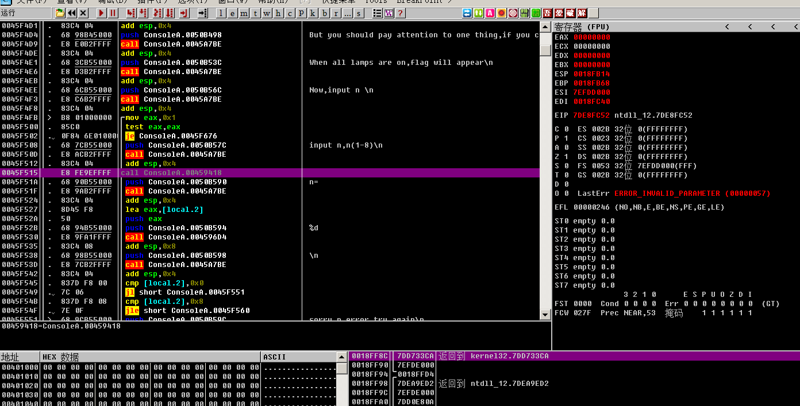

<!DOCTYPE html>
<html>

<head><meta name="generator" content="Hexo 3.9.0">
    <meta charset="utf-8">
    
    <title>BugkuCTF逆向 | Hu5k7&#39;s Blog</title>
    <meta name="viewport" content="width=device-width, initial-scale=1, maximum-scale=1">

    

    

    

    <link rel="stylesheet" href="/dist/build.css?v=1.5.0">

    <script>
        window.aomori = {
            
        }
    </script>

</head></html>

<body>

  <div class="container">
    <header class="header">
        <div class="header-type">
            
            <div class="avatar avatar-sm">
                
            </div>
            
            <a href="/">Hu5k7&#39;s Blog</a>
            
        </div>
        <div class="header-menu">
            <div class="header-menu-inner">
                
                <a href="/">Home</a>
                
                <a href="/archives">Archives</a>
                
                <a href="/friends">Friends</a>
                
            </div>
            <div class="header-menu-social">
                
            </div>
        </div>

        <div class="header-menu-mobile">
            <div class="header-menu-mobile-inner" id="mobile-menu-open">
                <i class="icon icon-menu"></i>
            </div>
        </div>
    </header>

    <div class="header-menu-mobile-menu">
        <div class="header-menu-mobile-menu-bg"></div>
        <div class="header-menu-mobile-menu-wrap">
            <div class="header-menu-mobile-menu-inner">
                <div class="header-menu-mobile-menu-close" id="mobile-menu-close">
                    <i class="icon icon-cross"></i>
                </div>
                <div class="header-menu-mobile-menu-list">
                    
                    <a href="/">Home</a>
                    
                    <a href="/archives">Archives</a>
                    
                    <a href="/friends">Friends</a>
                    
                </div>
            </div>
        </div>
    </div>

</div>

  <div class="container">
    <div class="main">
      <section class="inner">
        <section class="inner-main">
          <div class="post">
    <article id="post-ckcl7bayt0004mwmo9pf744cm" class="article article-type-post" itemscope
    itemprop="blogPost">

    <div class="article-inner">

        

        
        <header class="article-header">
            
  
    <h1 class="article-title" itemprop="name">
      BugkuCTF逆向
    </h1>
  

        </header>
        

        <div class="article-more-info article-more-info-post hairline">

            <div class="article-date">
  <time datetime="2019-11-06T14:59:26.000Z" itemprop="datePublished">2019-11-06</time>
</div>

            
            <div class="article-category">
                <a class="article-category-link" href="/categories/CTF/">CTF</a>
            </div>
            

            
            <div class="article-tag">
                <ul class="article-tag-list"><li class="article-tag-list-item"><a class="article-tag-list-link" href="/tags/CTF-Reverse-Note/">CTF-Reverse-Note</a></li></ul>
            </div>
            

            
        </div>

        <div class="article-entry post-inner-html hairline" itemprop="articleBody">
            <h1 id="0x00-开言">0x00 开言</h1>
<p>最近了解了点逆向，pwn，汇编，C，C#等知识，开始试着刷题实战一下。</p>
<a id="more"></a>
<h2 id="0x00-1-环境-工具">0x00.1 环境&amp;工具</h2>
<p>工具： IDA &amp; OD</p>
<p>环境：Windows7</p>
<h2 id="0x00-2-需要注意的事项">0x00.2 需要注意的事项</h2>
<blockquote>
<p><strong>tips: 在windows下逆向需要注意，从windowsXP以上都有开启aslr保护，</strong></p>
<p>​		<strong>ASLR（Address space layout randomization）是一种针对缓冲区溢出的安全保护技术，通过对堆、栈、共享库映射等线性区布局的随机化，通过增加攻击者预测目的地址的难度，防止攻击者直接定位攻击代码位置，达到阻止溢出攻击的目的。</strong></p>
</blockquote>
<h1 id="0x01-入门逆向">0x01 入门逆向</h1>
<p>使用ida打开发现没有任何值得，查看的。直接 按F5查看伪代码 再按R转码         就完事了.</p>
<p></p>
<h1 id="0x02-Easy-vb">0x02 Easy_vb</h1>
<p>ida打开 直接往下看。看到flag</p>
<p></p>
<h1 id="0x03-Easy-re">0x03 Easy_re</h1>
<p>这次使用 od工具 。直接上只能搜索看看。</p>
<p></p>
<h1 id="0x04-游戏过关">0x04 游戏过关</h1>
<p>这一题比较难。</p>
<blockquote>
<p>需要用到的工具:</p>
<p>ida &amp; od</p>
</blockquote>
<h2 id="0x04-1-第一步-IDA">0x04.1 第一步 IDA</h2>
<p><strong>我们先用 ida 和 od 打开 程序</strong></p>
<p></p>
<p></p>
<p><strong>我们先看ida这边，先看shift+f12看看字符串</strong></p>
<p>发现字符串窗口有个 <strong>done!!!the flag is</strong>  这里是最后得出flag的地方，我们先不看他，往下翻</p>
<p></p>
<p></p>
<p>这次我们看到 <strong>Play a game\n</strong> 这里是程序的 开头言的地方。我们双击跳过去看看。</p>
<p></p>
<p>这里有调用<strong>aPlayAGameTheNI</strong>函数。我们按<strong>x</strong>跳到，调用他的地方。</p>
<p>他跳到了最上面的窗口。我们往下翻</p>
<p></p>
<p>看到 <strong>input n,n 这里 是让用户输入(1-8)的地方</strong>。我们按<strong>F5</strong>看看伪代码</p>
<p></p>
<p>分析一下伪代码。</p>
<p></p>
<p>我们看到这里是给用户循环输入的地方 有个断点sub_459418();。就是我们要跳转的地方.</p>
<p>我们现在回到之前看到 <strong>done!!! the flag is</strong> 地方 跳转过去看一看。</p>
<p></p>
<p>看到有一个函数为 <strong>aDoneTheFlagIs</strong>,</p>
<p>我们打开一个选项，能直接查看到这个的 <strong>基址</strong></p>
<p></p>
<p>我们往上翻，找到这个的Top位置</p>
<p></p>
<p>这里。<strong>0045E940</strong>我们记下来这个<strong>基址</strong></p>
<p>再把</p>
<p></p>
<p>sub_459418();这里的基址记下来。</p>
<h2 id="0x04-2-第二步-OD">0x04.2 第二步 OD</h2>
<p>现在我们回到 od</p>
<p></p>
<p>先这个程序运行起来。点播放键(左上角)</p>
<p>然后我们点<strong>Ctrl+G</strong> 来跳转地址到<strong>0045E940</strong>地方。</p>
<p></p>
<p>按F2设置断点。然后到程序里随便输入个数字(1-8),发现该程序运行到了</p>
<p></p>
<p><strong>0045f515地址</strong>这里停住了，接下来我们用<strong>0045e940</strong>这个地址</p>
<p>双击0045f515地址，写上jmp 0045e940(jmp为汇编码，意思跳转)</p>
<p></p>
<p></p>
<p>更新程序运行。点到该程序的循环位置，为止。(0045EB51)</p>
<p></p>
<p>白框的位置便是　ｗｈｉｌｅ循环的地方<br>
我们在0045EBC1地址设置断点　使这个程序直接跳过ｗｈｉｌｅ循环<br>
设置断点后　点继续运行程序</p>
<p></p>
<p></p>
<p>拿到flag!</p>
<p><strong>转载请标明出处</strong></p>

        </div>

    </div>

    

    

    

    
<div class="article-copyright hairline">
  <p>
    本作品采用 <a rel="license" href="http://creativecommons.org/licenses/by-nc-nd/4.0/">知识共享署名-非商业性使用-禁止演绎 4.0 国际许可协议</a> 进行许可。
  </p>
</div>


    

    
<nav class="article-nav">
  
    <a href="/2019/12/03/xxe/" id="article-nav-newer" class="article-nav-link-wrap">
      <div class="article-nav-caption">下一篇</div>
      <div class="article-nav-title">
        
          XXE漏洞学习
        
      </div>
    </a>
  
  
    <a href="/2019/11/01/pwn学习笔记-00/" id="article-nav-older" class="article-nav-link-wrap">
      <div class="article-nav-caption">上一篇</div>
      <div class="article-nav-title">【Pwn】学习笔记第零期:开端</div>
    </a>
  
</nav>


    <section class="share">
        <div class="share-title">分享</div>
        <a class="share-item" target="_blank"
            href="https://twitter.com/share?text=BugkuCTF逆向 - Hu5k7's Blog&url=https://hu5k7.github.io/2019/11/06/BugkuCTF逆向/">
            <box-icon type='logo' name='twitter'></box-icon>
        </a>
        <a class="share-item" target="_blank"
            href="https://www.facebook.com/sharer.php?title=BugkuCTF逆向 - Hu5k7's Blog&u=https://hu5k7.github.io/2019/11/06/BugkuCTF逆向/">
            <box-icon name='facebook-square' type='logo' ></box-icon>
        </a>
        <!-- <a class="share-item" target="_blank"
            href="https://service.weibo.com/share/share.php?title=BugkuCTF逆向 - Hu5k7's Blog&url=https://hu5k7.github.io/2019/11/06/BugkuCTF逆向/&pic=">
            <div class="n-icon n-icon-weibo"></div>
        </a> -->
    </section>

</article>


</div>
        </section>
      </section>
      <aside class="sidebar">
        <div class="widget">
          

  
  <div class="widget-wrap widget-recent-posts">
    <div class="widget-title"><span>Recent Posts</span></div>
    <div class="widget-inner">
      <ul>
        
          <li>
            <a href="/2020/07/10/Mark-OnceBuild-CrossC2Object/">Mark_OnceBuild_CrossC2Object</a>
          </li>
        
          <li>
            <a href="/2020/05/14/iseacms代码审计入门级/">iseacms代码审计入门级</a>
          </li>
        
          <li>
            <a href="/2020/04/10/takeshell-01/">Mark-once-WebShell_01</a>
          </li>
        
          <li>
            <a href="/2020/02/24/MSSQL盲注/">MSSQL_Blind_Injection</a>
          </li>
        
          <li>
            <a href="/2020/02/20/Oracle注入/">Oracle Injection</a>
          </li>
        
      </ul>
    </div>
  </div>


  
  <div class="widget-wrap widget-cate">
    <div class="widget-title"><span>Categories</span></div>
    <div class="widget-inner">
      <ul class="category-list"><li class="category-list-item"><a class="category-list-link" href="/categories/Bash/">Bash</a></li><li class="category-list-item"><a class="category-list-link" href="/categories/CTF/">CTF</a><ul class="category-list-child"><li class="category-list-item"><a class="category-list-link" href="/categories/CTF/CTF-Pwn-Note/">CTF-Pwn-Note</a></li><li class="category-list-item"><a class="category-list-link" href="/categories/CTF/CTF-Reverse-Note/">CTF-Reverse-Note</a></li><li class="category-list-item"><a class="category-list-link" href="/categories/CTF/CTF-Web-Note/">CTF-Web-Note</a></li></ul></li><li class="category-list-item"><a class="category-list-link" href="/categories/Note/">Note</a></li><li class="category-list-item"><a class="category-list-link" href="/categories/Python/">Python</a></li><li class="category-list-item"><a class="category-list-link" href="/categories/vulnhub/">vulnhub</a></li></ul>
    </div>
  </div>


  
  <div class="widget-wrap widget-archive">
    <div class="widget-title"><span>Archive</span></div>
    <div class="widget-inner">
      <ul class="archive-list"><li class="archive-list-item"><a class="archive-list-link" href="/archives/2020/07/">2020</a></li><li class="archive-list-item"><a class="archive-list-link" href="/archives/2019/12/">2019</a></li><li class="archive-list-item"><a class="archive-list-link" href="/archives/2018/12/">2018</a></li></ul>
    </div>
  </div>


        </div>
        <div id="backtop"><i class="icon icon-arrow-up"></i></div>
      </aside>
    </div>
  </div>

  <footer class="footer">
    <div class="footer-inner">
        <div class="footer-info">
            <span>&copy; 2013 - 2020 Hu5k7&#39;s Blog</span>
        </div>
        <div class="footer-powered">
            <a href="https://github.com/lh1me/hexo-theme-aomori" target="_blank">Aomori</a> Theme · Powered By Hexo
        </div>
    </div>
</footer>


<script src="/dist/build.js?1.5.0"></script>
<script src="/dist/custom.js?1.5.0"></script>


<!-- 百度链接提交 -->
<script>
    (function () {
        var bp = document.createElement('script');
        var curProtocol = window.location.protocol.split(':')[0];
        if (curProtocol === 'https') {
            bp.src = 'https://zz.bdstatic.com/linksubmit/push.js';
        }
        else {
            bp.src = 'http://push.zhanzhang.baidu.com/push.js';
        }
        var s = document.getElementsByTagName("script")[0];
        s.parentNode.insertBefore(bp, s);
    })();
</script>


<script src="/live2dw/lib/L2Dwidget.min.js?094cbace49a39548bed64abff5988b05"></script><script>L2Dwidget.init({"pluginModelPath":"assets/","model":{"jsonPath":"/live2dw/assets/miku.model.json"},"display":{"position":"left","width":200,"height":350},"mobile":{"show":false},"log":false,"pluginJsPath":"lib/","pluginRootPath":"live2dw/","tagMode":false});</script></body>
</html>